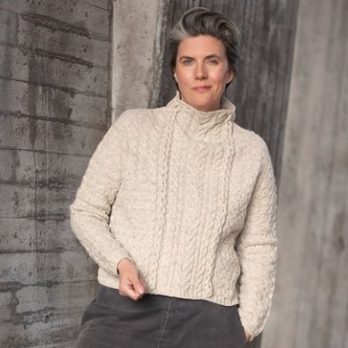
En flätstickad tröja
Nybrokajen
En dag på väg till jobbet fick jag syn på en flätstickad tröja. Det syntes tydligt att den var hemstickad. Som en gammal klenod någon bevarat för framtida generationer och som bars av en ung släkting. Det jag bar med mig länge efter att ha sett den var en tjock fläta som låg utanpå det stickade. Jag experimenterade lite, och kom på att i-cord i öglor som man sedan trär in i varandra vore lösningen i min egen tolkning av tröjan jag såg.
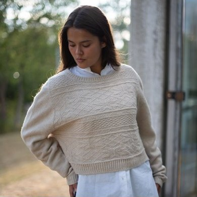
En blinkning till Skåne
Alstad
2021 fick jag äran att vara med i Laines bok 52 Weeks of Shawls. Min sjal var en hyllning till mina rötter i Skåne. Jag hade tagit mönsterrapporter från gamla spedetröjor och kokat ihop en sjal. Jag tänkte länge efter att jag väldigt gärna ville ha en tröja i det med. Och tröjan Alstad blev till.
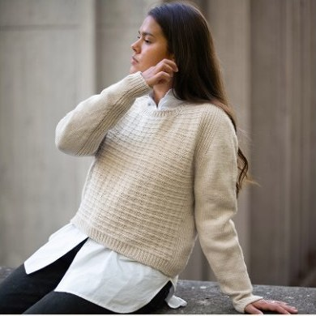
En strukturtröja
Björn
En klassisk strukturtröja med spännande axelkonstruktion, med resår i sömmen mellan ärm och fram- och bakstycke. Tröjan stickas uppifrån och ned.
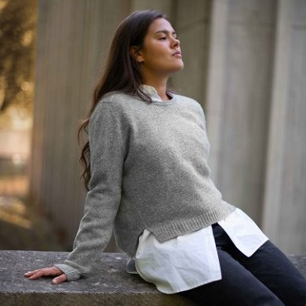
En lätt baströja
Tilted Sport
Varje garderob behöver en baströja, och Tilted är den perfekta sådana. Lite roligare att sticka eftersom det händer lite under stickningens gång. Den har sneda linjer både uppe på axlarna och en förskjuten midja.
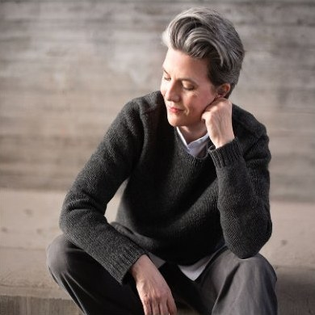
En tjockare baströja
Tilted Worsted
En snabbstickad baströja i lite tjockare garn, med rolig konstruktion både på axlarna och i sidorna. Principen och utseendet är desamma som för Tilted Sport, med lite andra siffror och en klassisk ärm.
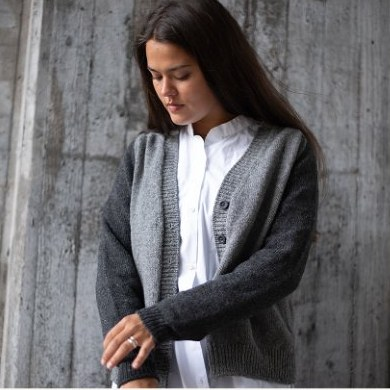
Trefärgad baskofta
Baskoftan
Den här baskoftan stickas uppifrån och ned i tre nyanser eller färger, där de mörkare stråken löper ut från axlarna och blir ärmar. Färgerna byts med intarsia. V-ringningen växer fram ur ökningarna i framkanterna, och knäppkanten stickas till sist i två av färgerna.
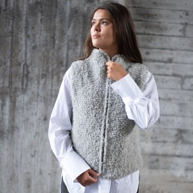
En fluffig väst
Västen Malin
När det är som allra kallast ute och du vill bli omsluten som av en mjuk kram är den här västen underbar att svepa in dig i. Den stickas uppifrån och ned, och vill du (och det vill du) kan du sätta i en dragkedja. Jag tycker definitivt att västen ska stickas i ett luftigt ullbouclégarn.
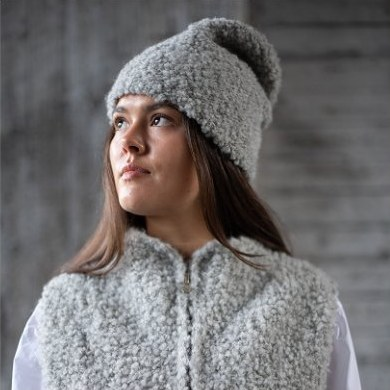
En ullig mössa
Mössan Malin
De riktigt kalla dagarna, när luften biter i kinderna och du drar mössan ned över öronen, är det den här du vill ha på huvudet. Ullbouclén är mjuk och luftig, värmer utan att klia och lägger sig snällt mot pannan helt utan resårkant. Den tar en kväll att sticka och blir din favorit hela vintern.
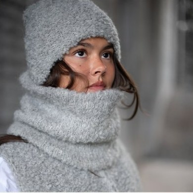
En ullig halstub
Buffen Malin
Jag brukade cykla till jobbet oavsett väder, och under vintern var ansiktet särskilt svårt att skydda. Då stickade jag den här dubbelvikta halstuben i ullbouclé. Ett väldigt enkelt stickprojekt för nybörjaren.
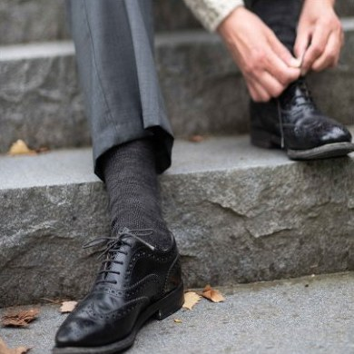
Den perfekta extrastickningen
Enkla sockor
Jag har alltid varit en motvillig sockstickare. Det är något med att sticka runt och runt, och sedan vända hälen. Och när den ena sockan är klar väntar den andra. Men på sista tiden har jag börjat förstå tjusningen med att alltid ha ett par väldigt enkla sockor på stickorna. Min favorit är då enklast möjliga, med en instickshäl.
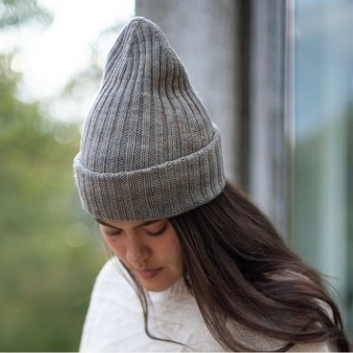
En resårmössa
Mössan Ville
En mössa där du bestämmer passformen själv. Den är stickad lång med flit, så att du kan vika upp kanten en gång för en nätt mössa eller två gånger för en rejäl mudd över öronen. Resåren i 2 × 2 ger djupa kanaler som följer huvudet, och den tubulära avmaskningen ser likadan ut från båda håll.
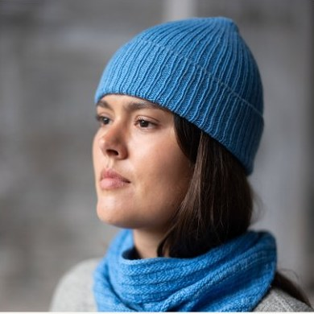
En till resårmössa
Mössan Bo
Lillebrodern till mössan Ville. Samma konstruktion uppifrån och ned, samma uppvikta kant, men resåren i 1 × 1 ligger tätare och ger en jämnare yta för dig som vill ha mössan diskret. Bo sitter nära huvudet utan att klämma, och kanten ser lika färdig ut vare sig du viker upp den eller låter den vara.
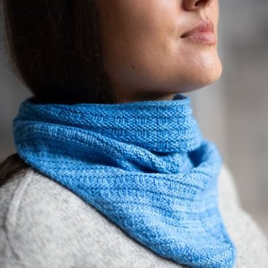
En liten sjal
Sjalen Olle
Den här sjalen låter garnet göra jobbet. Rapporten är bara sex varv och upprepas hela vägen, så färgerna i härvan hinner röra sig över hela ytan utan att mönstret kommer i vägen. En i-cord i början och en i slutet ramar in alltihop. Originalet är stickat i Rosy Sport från Dandelion Yarns, och en härva räcker hela vägen.
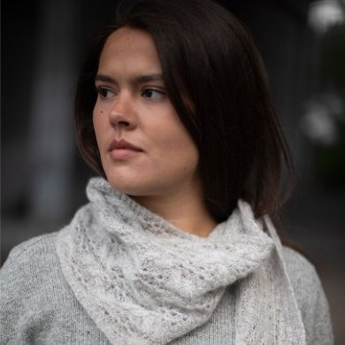
En luftig sjal
Sjalen Sus(an)
Garnet till den här sjalen är det mjukaste, mest fluffiga du kan tänka dig. Egentligen borde man inte sticka flätor med ett så luddigt garn, men jag ville åt just den effekten. Lite som att rita med pastellkritor, där gränserna suddas ut. Det går utmärkt att byta ut mot ett vanligt rundspunnet merinogarn om du vill ha mer definierade flätor, eller varför inte två trådar mohair?
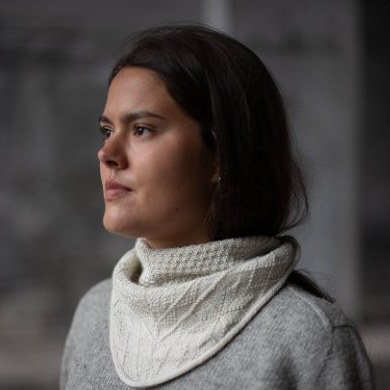
En liten skånsk sjal
Sjalen Lilla Alstad
Lilla Alstad ligger mellan Alstad och Fru Alstad, och sjalen lägger sig precis lika självklart över axlarna. Den är bredare och grundare än en klassisk trekantssjal. Mönstret vandrar genom fem sektioner, från dubbel mossstickning via pilar nedåt och uppåt, och landar till sist i ett fält av stjärnor. Cirka 300 meter garn, och en sjal som aldrig hinner bli tråkig att sticka.